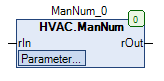
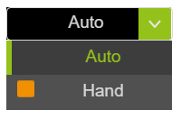
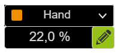

ManNum (FB)¶
FUNCTION_BLOCK ManNum EXTENDS MANASBase IMPLEMENTS IMan
Kurzbeschreibung¶
Handübersteuerung für ein numerisches Signal
Darstellung¶

Schnittstellen¶
Eingänge¶
Name Datentyp Wertebereich Initialwert Funktion rIn REAL Numerischer Eingang
Ausgänge¶
Name Datentyp Wertebereich Initialwert Funktion rOut REAL Numerischer Ausgang
Sollwerte / Parameter¶
Name Datentyp Wertebereich Initialwert Funktion rManValue REAL 0.0 Handwert eManModeN eManNum eManNum.Auto, eManNum.Man eManNum.Auto Betriebsart für das numerische Ausgangssignal rOut
Funktionsbeschreibung¶
Allgemeines¶
Dieser Funktionsbaustein dient zur Handübersteuerung eines numerischen Eingangssignals rIn.
Numerischer Ausgang rOut¶
rIn eManModeN rOut Hinweise Wert eManNum.Auto Wert Automatikbetrieb mir rIn X eManNum.Man rManValue Handbetrieb mit Handwert
Legende: X = beliebig
Visualisierung¶
Passendes Visualisierungselement aus der HVACV Visu Library: ManNum
Darstellung¶
 
Schnittstellen Visu-Element¶
Name Datentyp Typ Initialwert Funktion eManModeN HVAC.eMANNUM VAR_IN_OUT Hier eManModeN vom FB ManNum eintragen Bsp. PRG.ManNum.eManModeN rManValue REAL VAR_IN_OUT Hier Handwert rManValue vom FB ManNum eintragen z.B. PRG.ManNum.rManValue bDecimals BYTE VAR_INPUT 1 Anzahl der Nachkommastellen hier eintragen z.B. 0= XX ; 1 = XX.X ; 2= XX.XX Die Anzeige wird nicht gerundet sondern abgeschnitten. sUnit STRING VAR_INPUT Einheit im Stringformat eingeben z.B. ‘°C’ oder ‘%’ rMinInputVisu REAL VAR_INPUT 0 Min Eingabe die im Numpad erscheint und rot aufleuchetet wenn Wert unterschritten wird. Eingabe ist dann nicht möglich. rMaxInputVisu REAL VAR_INPUT 100 Max Eingabe die im Numpad erscheint und rot aufleuchetet wenn Wert überschritten wird. Eingabe ist dann nicht möglich. sDialogTitle STRING VAR_INPUT Titel im Stringformat eingeben z.B: ‘Eingabe Raumtemperatur’ - erscheint im Numpad bei der Eingabe.
Hinweis: VAR_IN_OUT Schnittstellen müssen belegt werden, VAR_INPUT sind optional.